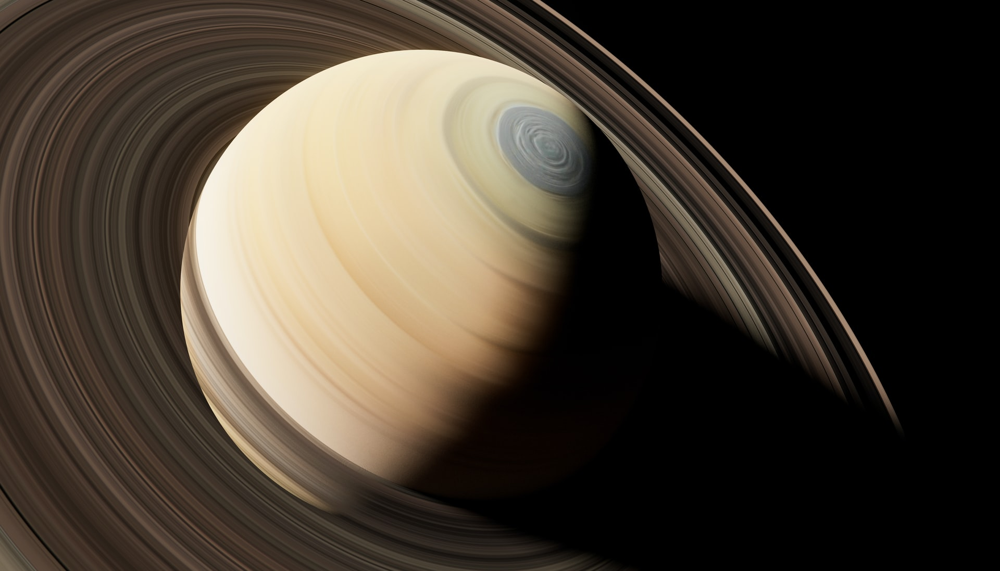
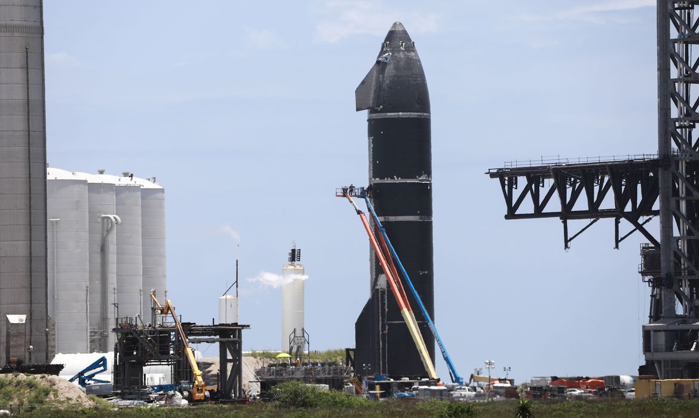
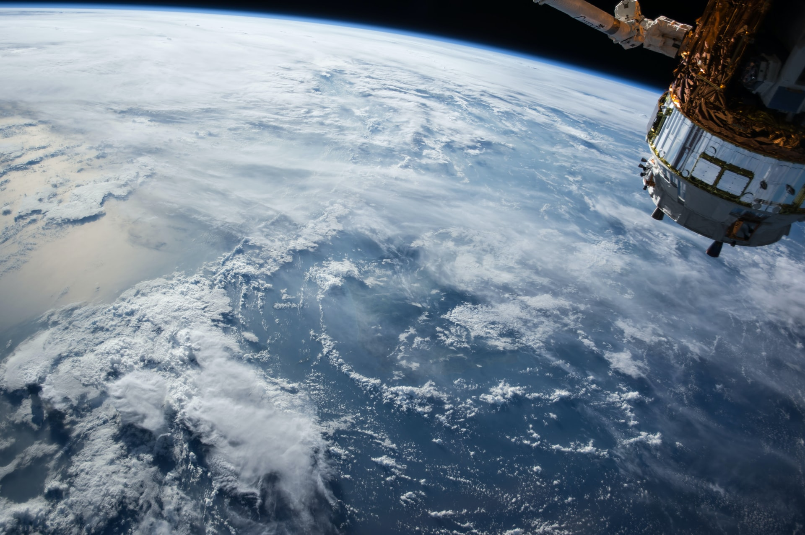

Saturno é o sexto planeta a partir do Sol e o segundo maior do Sistema Solar atrás de Júpiter.
Leia maisSpace Exploration Technologies Corp., cujo nome comercial é SpaceX, é uma fabricante estadunidense de sistemas aeroespaciais, transporte espacial e comunicações com sede em Hawthorne, Califórnia.
Leia mais
SpaceX mostra como espaçonave Starship colocará 2ª geração da Starlink em órbita.
Leia mais